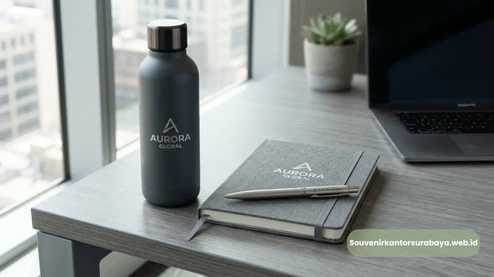
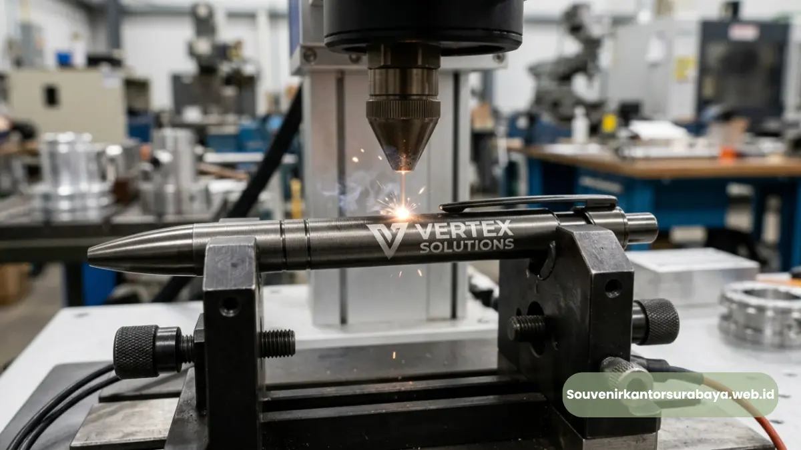

Souvenir Kantor Custom Logo: Cara Efektif Memperkuat Branding Perusahaan
Souvenir kantor custom logo adalah produk merchandise kantor yang dicetak atau ditempel dengan identitas visual perusahaan, seperti nama, logo, atau tagline, untuk memperkuat pengenalan brand di setiap kesempatan produk tersebut digunakan.
Strategi ini efektif karena setiap kali penerima memakai produk, logo perusahaan turut terlihat oleh lingkungan sekitarnya, menciptakan eksposur brand yang berkelanjutan tanpa biaya iklan berulang.
- Souvenir kantor custom logo berfungsi sebagai media branding pasif yang terus bekerja selama produk digunakan.
- Terdapat beberapa teknik custom logo, masing-masing cocok untuk jenis bahan produk yang berbeda.
- Pemilihan produk yang tepat untuk custom logo memengaruhi tingkat visibilitas dan daya tahan cetakan.
- Desain logo yang proporsional dan rapi meningkatkan kesan profesional perusahaan di mata penerima.
- souvenir kantor surabaya menyediakan layanan custom logo dengan berbagai pilihan teknik dan produk berkualitas.
Apa Manfaat Souvenir Kantor Custom Logo bagi Perusahaan?
Souvenir kantor custom logo memberikan manfaat utama berupa peningkatan brand recall, penguatan citra profesional, dan efisiensi biaya promosi dalam jangka panjang dibanding metode pemasaran konvensional.
Ketika logo perusahaan tercetak pada produk yang digunakan setiap hari, seperti tumbler atau alat tulis, penerima secara tidak langsung terpapar identitas brand berulang kali.
Selain aspek branding eksternal, custom logo pada souvenir kantor juga memperkuat identitas internal perusahaan. Produk yang konsisten menampilkan logo dan warna korporat membantu membangun rasa kebanggaan dan keterikatan karyawan terhadap perusahaan, terutama saat produk tersebut diberikan sebagai bagian dari program apresiasi internal.
Bagi perusahaan yang ingin membangun kesan profesional sekaligus konsisten pada setiap merchandise yang dibagikan, layanan custom logo dari souvenir kantor surabaya dapat disesuaikan dengan pedoman identitas visual (brand guideline) perusahaan Anda.
Baca Juga
Bagaimana Cara Kerja Custom Logo pada Produk Souvenir Kantor?
Proses custom logo pada souvenir kantor umumnya dimulai dari pengumpulan file desain logo, penyesuaian ukuran dan posisi cetak, pemilihan teknik aplikasi, hingga proses produksi pada produk yang dipilih.
Tahap pertama adalah konsultasi desain, di mana tim produksi menyesuaikan ukuran logo dengan proporsi permukaan produk agar hasil akhir terlihat rapi dan tidak berlebihan.
Tahap berikutnya adalah pemilihan teknik aplikasi logo, yang disesuaikan dengan jenis bahan produk seperti logam, kain, kulit, atau plastik. Setelah desain disetujui, proses produksi dilakukan dengan kontrol kualitas untuk memastikan hasil cetak presisi dan tahan lama.

Teknik Apa Saja yang Digunakan untuk Mencetak Logo Souvenir Kantor?
Teknik yang umum digunakan untuk mencetak logo pada souvenir kantor meliputi bordir, embossing, cetak UV, laser engraving, dan sablon, yang masing-masing memiliki karakteristik dan kecocokan bahan berbeda.
Bordir cocok untuk produk berbahan kain seperti tas, topi, atau pouch, dan memberikan kesan premium serta tekstur timbul yang tahan lama.
Embossing biasa digunakan pada produk kulit atau kertas premium seperti notebook eksekutif, menghasilkan efek logo timbul tanpa tambahan warna sehingga terkesan elegan dan minimalis.
Cetak UV ideal untuk produk plastik atau logam dengan permukaan halus, seperti tumbler atau power bank, karena mampu mencetak logo dengan warna penuh secara presisi.
Laser engraving digunakan pada bahan logam atau kayu, menghasilkan ukiran permanen yang tidak mudah pudar meski sering digunakan.
Sementara sablon umumnya digunakan pada produk berbahan kain untuk kebutuhan cetak logo dalam jumlah besar dengan biaya lebih efisien. Pemilihan teknik yang tepat sangat memengaruhi daya tahan dan kualitas visual logo pada produk akhir, sehingga konsultasi dengan tim produksi sangat disarankan sebelum menentukan teknik custom logo.
Baca Juga
Produk Apa yang Paling Cocok untuk Custom Logo Perusahaan?
Produk yang paling cocok untuk custom logo perusahaan adalah item dengan permukaan luas dan rata, seperti tumbler, notebook, tas kerja, dan power bank, karena memberikan ruang cetak logo yang optimal dan mudah terlihat.
Tumbler menjadi salah satu pilihan favorit karena digunakan hampir setiap hari dan memiliki permukaan silinder yang ideal untuk cetak logo berukuran sedang hingga besar.
Notebook eksekutif juga populer karena sering dibawa dalam pertemuan bisnis, sehingga logo pada sampulnya berpotensi terlihat oleh banyak pihak.
Tas kerja atau tote bag memberikan area cetak paling luas, cocok untuk logo dengan detail lebih kompleks, sementara power bank menjadi pilihan modern yang relevan dengan kebutuhan mobilitas kerja saat ini.
- Souvenir kantor custom logo adalah strategi branding pasif yang efektif dan efisien untuk jangka panjang.
- Teknik custom logo perlu disesuaikan dengan jenis bahan produk agar hasil cetak optimal dan tahan lama.
- Produk dengan permukaan luas seperti tumbler, notebook, dan tas kerja paling ideal untuk custom logo perusahaan.
- Wujudkan souvenir kantor custom logo perusahaan Anda bersama souvenir kantor surabaya untuk hasil cetak yang rapi dan profesional.

Hawa Nadira
Tim penulis CorporateGifts ID berfokus pada strategi souvenir kantor, merchandise korporat, dan inovasi brand untuk klien B2B.
Keahlian: Branding perusahaan, produksi souvenir, paket event, desain materi promosi.
Artikel Terkait
Souvenir Kantor Custom Logo Surabaya untuk Memperkuat Identitas Brand
Custom logo pada souvenir kantor menjadi salah satu cara paling efektif untuk memperluas eksposur brand secara berkelanjutan.
Baca Selengkapnya
Manfaat Pulpen Parker Ukir Nama Perusahaan untuk Branding Korporat
Memberikan pulpen Parker ukir nama perusahaan sebagai merchandise eksklusif memiliki dampak positif bagi brand image.
Baca SelengkapnyaSeminar Kit Surabaya Custom Logo untuk Branding Perusahaan
Seminar kit dengan cetak custom logo menjadi salah satu strategi branding pasif yang sangat efisien.
Baca Selengkapnya